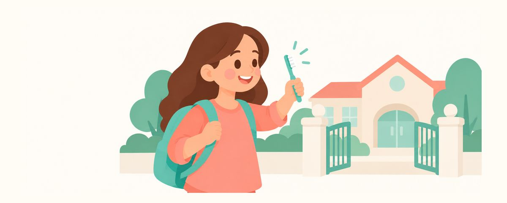

Yeni okul dönemine dişlerle hazırlık: yeni fırça, yemekten sonra suyla çalkalama, okul taraması
Yeni dönemde diş fırçasını yenileyin, öğle yemeğinden sonra suyla çalkalayın, mataraya yalnızca su koyun. Okul diş taraması sonuçlarının takibi de burada.
Bir bakışta
- Okul yılına yeni bir diş fırçasıyla başlayın
- Öğle yemeğinden sonra suyla çalkalayın, matarada yalnızca su
- Tarama tedavi gerektiğini mi söylüyor? Yakında diş hekimine gidin
Yeni okul dönemi gelince çanta, okul ayakkabısı ve kalem kutusu hazırlamakla meşgul olursunuz. Bu arada dişler için de hazırlık yaparsanız bütün dönem içiniz rahat eder. Sınıf değişince günlük program da değiştiği için fırçalama alışkanlıklarını yeniden düzenlemenin tam zamanıdır.
Yeni dönemde günlük düzen değişir
Yeni dönemde kalkış saati, öğle yemeği saati, kurs ve spor programları derken günün akışı değişir. Böyle zamanlarda fırçalama sessizce aradan çıkabilir. Sabah aceleden atlanır, gece yorgunluktan üstünkörü yapılır.
Okulda dişleri korumanın zor olduğu anlar da çoktur. Öğle yemeğinden sonra fırçalayacak yer ya da zaman olmayabilir; mataraya meyve suyu ya da sporcu içeceği konursa gün boyu yudum yudum içilir. O zaman dişler bütün gün şekerle karşı karşıya kalır ve çürük kolay oluşur. Ağızdaki bakteriler her şeker alımında asit üretir; ne kadar sık içilirse tükürüğün dişi onarmasına o kadar az fırsat kalır.
Sınıf yükseldikçe çocuğun kendisinin üstlenmesi gereken işler artar. Küçük sınıflardaysa sabah ve akşam fırçalamayı ebeveyn olarak siz kontrol edin; büyük sınıflardaysa saatleri kendisinin belirleyip uygulamasına izin verirken arada bir iyi fırçalanıp fırçalanmadığına birlikte bakın. Kurstan geç döndüğü günlerde atıştırıp hemen uykuya dalmak kolaydır; böyle günlerde yatmadan önceki fırçalamaya özellikle dikkat edin.
Okulda yapılan diş taraması da bu dönemde takip edilecek bir konudur. Okul taraması, çok sayıda çocuğa kısa sürede bakılan bir tarama kontrolüdür. Amacı sorunu olabilecek çocukları belirlemek olduğu için diş hekimindeki ayrıntılı muayenenin yerini tutmaz. Bu yüzden tarama sonucunda tedavi önerisi yazıyorsa mutlaka diş hekiminde yeniden kontrol ettirin. Okuldan gelen sonuç formunu atmayın; diş hekimine giderken götürürseniz nereye bakılması gerektiğini anlatmak kolaylaşır.
Yeni dönem hazırlıkları ve alışkanlıklar
- Çocuğunuzun diş fırçasını yenileyin. Kılları açılmış fırça diş yüzeyini iyi temizleyemez.
- Okulda fırça bırakmak mümkünse bir tane daha hazırlayın. Fırça kabında uzun süre ıslak kalırsa iyi kurumaz; eve gelince çıkarıp durulayın ve dik şekilde kurutun.
- Öğle yemeğinden sonra suyla çalkalasın; okulda fırçalama imkânı varsa fırçalasın.
- Mataraya yalnızca su koyun. Beden eğitiminden ya da spordan sonra da susuzluğu suyla gidersin.
- Okuldan önce sabah, yatmadan önce gece. Günde 2 kez fırçalamayı mutlaka koruyun. Florürlü diş macununu bezelye tanesi kadar kullanın.
- Beden eğitiminde ya da okul takımında temas varsa bir ağız koruyucu hazırlayın.
Yeni dönemin ilk haftasında sabah ve akşam fırçalama saatlerini çocuğunuzla birlikte belirleyin. "Kahvaltıdan sonra, çantayı takmadan önce", "Pijamayı giyer giymez" gibi başka bir işe bağlarsanız unutulmaz. Okulda fırçalamaktan utanan çocuklar da olur; o zaman yalnızca suyla çalkalaması ve akşam fırçalamasını titizlikle yapması yeterlidir.
Ebeveynlerin sık yaptığı bir hata, okul taramasında "tedavi önerilir" çıksa bile çocuk ağrıdan yakınmadığı için ertelemektir. Çürükler çoğu zaman başta acıtmaz. Tersine, okul taramasında sorun çıkmadı diye düzenli kontrolü atlamamaya da dikkat edin.
Sık sorulan sorular
Okul taramasında sorun çıkmadıysa diş hekimine gitmesek olur mu?
Okul taraması bir tarama kontrolüdür, diş hekimindeki ayrıntılı muayenenin yerini tutmaz. Yeni dönem başlayınca düzenli kontrolün zamanının gelip gelmediğine bakın.
Öğle yemeğinden sonra diş fırçalamak şart mı?
Fırçalayabiliyorsa en iyisi budur. Zorsa ağzını suyla çalkalasın, evde akşam fırçalamasını titizlikle yapın.
Mataraya arpa çayı ya da süt koyabilir miyim?
Gün boyu azar azar içilen mataraya en iyisi su koymaktır. Kore'de sık içilen arpa çayı gibi diğer içecekleri yemek ya da atıştırma saatinde içirin.
Ağız koruyucuyu mutlaka diş hekiminde mi yaptırmalı?
Önemli olan hangi sporu yaptığı ve koruyucunun ağzına iyi oturup oturmadığıdır. Okul takımına başlıyorsa düzenli kontrolde diş hekiminize danışın.
Bu durumlarda diş hekimine gidin
- Okul tarama sonucunda tedavi önerisi yazıyorsa
- Fırçalarken kanama oluyorsa ya da ağrıdan söz ediyorsa
- Yeni dönemde düzenli kontrolün zamanı geldiyse
- Dişte kahverengi ya da siyah noktalar, beyaz ve mat alanlar görüyorsanız
- Spor yaparken dişini çarptıysa
Doğru zamanda alın
Diş Takvimi uygulamasına çocuğunuzun doğum tarihini (veya tahmini doğum tarihini) girin; bu yazılar gerektiği zaman hatırlatma olarak size ulaşsın. Ücretsiz, üyelik gerekmez.
Kaynaklar
- MOE_KR · 학교건강검사규칙(학생 건강검사·구강검진) (2024)
- ADA · Toothbrushes (ADA Oral Health Topics) (2024)
Bu yazıdaki bilgiler genel eğitim amaçlıdır ve profesyonel diş tedavisinin yerini tutmaz. Çocuğunuzun durumu hakkında bir diş hekimine danışın.